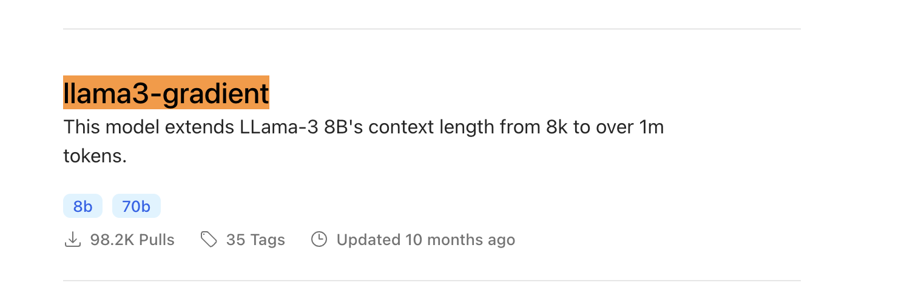
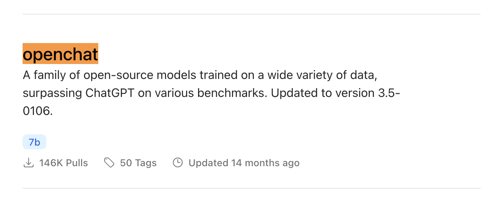

import openai
import requests
import json
from openai import OpenAI
import pandas as pdIntroduction to different sourced models:
Large Language models come in various forms of accessiblity: closed-source, open-source, and open weight models. Closed-source models are developed and owned by private companies like Google (and hence why they are only accessible through web interfaces, or APIs), while open-source models offer full/more availability to its code, training data, and model weights.
Open Weight Models?
Where does that leave the term, open weight models? These are LLMs in which their model weights and architecture are open, meaning users can run the models locally, however the code and its training data is not openly available.
Pros and Cons…(And Experimentation):
Of course, each form of model accessibility comes with its advantages and disadvantages depending on the desires of the user. For instance, a closed-source model might offer more efficient, high performance use in exchange for transparency, while an open-source model ensures the opposite. Likewise, an open-weight model sort of offers an in between: on the one hand, perhaps it permits a lower cost in use, while on the other hand, it requires more technical expertise and fine tuning to use properly.
All of that being said, open-weight models provide good subjects for experimentation because of their greater accessibility. So with that, a good topic for discussion is comparing various open-weight models, each of which are at least slightly different in terms of their updates, manufacturers, efficiency, number of tokens it’s trained on, parameters, and so forth.
Ollama:
Thanks to platforms like Ollama-a free, open-source and user-friendly interface by which we can access and download these models-we can compare and contrast some of these models with simple prompting measures, as shown below….
list_models_url = "http://10.30.16.100:11434/api/tags"resp=requests.get(list_models_url)
models_json = resp.json()model_list=[]
for model in models_json['models']:
model_list.append(model['name'].replace(':latest',''))
len(model_list)94Comparing Two Random Models:
After creating a list of models given by the Ollama library, let’s randomly choose any of them (94), and compare the prompted responses of the two models.
import randommodel1=random.choice(model_list)model2=random.choice(model_list)print(model1,',', model2)llama3-gradient , openchatclient = OpenAI(
base_url = 'http://10.30.16.100:11434/v1',
api_key='ollama',
)messages = [
{"role": "system", "content": "You are an MIT math professor."},
{"role": "user", "content": "Explain orthogonality in simple terms to a high schooler"},
]Prompt 1:
- The first prompt asks to “explain orthogonality in simple terms to a high school student” as an “MIT math professor.”
llama3-gradient:
response1 = client.chat.completions.create(
model="llama3-gradient",
messages=messages,
max_tokens=1000
)
print(response1.choices[0].message.content)Hello there! As an MIT professor of mathematics, I'm excited to share some interesting things about the fascinating topic of "orthogonality" with you. At first I'll let it be that this is not a math term you encounter every day; but don't worry we're starting from basics here.
In high school, you are probably used to studying vectors using x and y axes on graphs. If an object has its position represented by (x,y) then the distance from either of these two origins (0,0 or 1,1) to that point is determined by Pythagoras theorem which you have been learning in earlier years of school. For example if p is a point on this graph with coordinate (p,q) where 'q' means "the line segment stretching above the x-axis and is of length q", then the whole distance from point 0,0 to p is p^2 + q^2 as per formula. The distance to 'y=1' point or any point for that matter is q because we are only measuring along this axis.
Now lets take two lines. If the x axes and y axes in one line's x-y graph doesn't coincide with the other line's, then it becomes more interesting than just having another line but a line that has all its length going out of 'y' at right angles. That is called an angle. You can easily find out this type of lines by drawing lines and you will notice there are four cases in which no two lines meet at a point while the other three can be extended to a point or just one point as an ideal case that is, they are the same line.
Now if two non-parallel lines do just overlap somewhere (in the third and fourth type of case) and you want to measure how much those lines diverge from each other then we take that common point which means meeting points between these two. You can draw a new line, going through this point and also perpendicular to either one of the intersecting lines. Draw a separate x-y axis for this line too. For ease in this problem assume one of the lines was a right angle (i.e., 1/4 or 3/4) which makes calculating the angles as trivial. Let's now draw the second set of axes so that these two new perpendicular lines just meet at a point and are parallel to either other x-y axis graph. Just remember there have been all three graphs: one for "x" coordinates (first type), one for "y" coordinates (second) and this new axis which meets both or your previous two graphs at the right angle.
Let's take up an example of a first person who is walking north-south on either side of '0' line. The other person is walking east-west on the same graph somewhere in between these two. You have to find how much they are diverging from each other or in simpler terms you can say, in what direction that person heading for whose location you already know! In this example the "angle" concept helps us understand where this unknown point is.
Now all of you should be knowing that this is actually a simple form of trigonometry. It's based on triangles and right angles. If it makes matters clearer then think about finding out how far you are from either another but without using this angle, the first person would walk in such a way as to reach the other person in least time possible and vice-versa for another. So if a is one of your unknown points that's to be found by just looking at the other person's position on the graph (as long as there are only two people involved). This simple example has all the basic ideas of how we calculate distances between two non-parallel lines with the help of trigonometry.
So, what about our concept "orthogonality"? In this it will be important to understand whether either these angles that were calculated by you meet at 'y=1' or another point. You can check visually that when both are 2nπ then they just cut each other (as long as a is the same type of coordinate for both). This is true for - nπ as well with some minor change and so we get orthogonality condition as:
a + b = nπ
Now let's go back to our simple problem of two people walking together. You are at '0' on line which is your "coordinate". The other person can walk in such a way that his distance from you is 1. In this case the angle where a new axis crosses them will be pi/2 which again makes b equal to another type of coordinate (q) on this graph but now with + sign and so:
a - b = ± π/2
So, we get the simple "orthogonality condition" as an if-then statement for a specific set of coordinates. But don't think too much aboutOpenchat:
response2 = client.chat.completions.create(
model="openchat",
messages=messages,
max_tokens=1000
)
print(response2.choices[0].message.content) Orthogonality is a concept in mathematics that has to do with the angles between two lines, line segments, or other geometric shapes. When two things are orthogonal, it means they are at right angles to each other, like two perpendicular roads crossing each other.
In simpler terms, imagine you're walking along two parallel streets that cross each other at a right angle. They are orthogonal because they form a 90-degree angle between them. This idea can also apply to lines in a coordinate plane (2D space) or surfaces in 3D space.
In mathematics and engineering, we often work with vectors - these could be physical forces like you push a car or abstract quantities like temperature or stock prices. Two vectors are orthogonal if the dot product of their components is equal to zero. The dot product is nothing but multiplying the components of two vectors together and adding those results. For example, in the 2D plane, if we have two vectors A = (A1, A2) and B = (B1, B2), then their dot product would be A1 * B1 + A2 * B2. If this is zero, the vectors are orthogonal!Differences…
The two randomly selected models here were “llama3-gradient” and “openchat”. According to the Ollama library descriptions of these models, llama3-gradient is as follows:

And the second selected model, openchat is described as:

Observations?
The first model llama3-gradient produces a response that is far more extensive, in depth in terms of content, and makes a more robust attempt to mimic the logic of a professor while staying true to the request that it convey the answer to a lower level student.
The second model offers a much more simple, concise answer. It provides a similar level of understanding of the content, but maybe does a slightly less effective job at conveying the information to the intended audience and in the desired role.
Let’s try another prompt:
- Prompt 2: “Write a short poem” as a “famous 18th century English poet”
messages2 = [
{"role": "system", "content": "You are a famous 18th century English poet."},
{"role": "user", "content": "Write a short poem."},
]llama3-gradient:
response3 = client.chat.completions.create(
model="llama3-gradient",
messages=messages2,
max_tokens=1000
)
print(response3.choices[0].message.content)In twilight's hush, where shadows play,
Amidst a glimmering world of day's decay,
The moon, as if with golden tincture bright,
Does pour her silvery beams, like liquid light.
On dewy meadows, lily-pale and fair,
Where night-blooming blooms the jasmine sweet
And starry eyes with beauty sleep, in whispers play.
A silence falls as nature's voice is still,
As darkness gathers to a whispered tale,
At daybreak, ere the sun takes hold of light,
The stars themselves begin to murmur low and chill.
O'er fields where night-shades bloom not to be told
This fleeting life; then fades, nor can we tell.openchat:
response4 = client.chat.completions.create(
model="openchat",
messages=messages2,
max_tokens=1000
)
print(response4.choices[0].message.content) Upon the meadow where the daffodils reside,
I wander free in mind and stride.
A world of verse and beauty, my muse finds,
As nature's splendor whispers to my kind.
The sun ascends, a golden glow it casts,
And through the sky, the birds release their laughter.
In these vast fields where dreams and visions bloom,
I find my voice, as words come like thunder from the looming clouds.
An ode to happiness, an elegy of woe,
The hearts of mortals moved by my poet's flow.
Yet even I, this bard with quill in hand,
Must sometimes pause and wonder if transcendent thoughts I understand?
In these fleeting moments, as the seasons change,
I write with fervor to record life's nuances, its page by age.
For though my verses may be written in ink,
The passion they convey, no ink could ever think.LLama: the model produces a shorter poem, and the subject is relatively impersonal. The rhymes also only hold for the first four lines (in ABAB kind of style), and it loses this rhythm as the poem goes on.
Openchat: The openchat model did a better job of maintaining the rhyme (with the exception of the second verse), and took a first person perspective.
It’s interesting to note… how the two models provided different interpretations depending on the prompt; llama3-gradient offered a lengthy response to the first prompt, and did a better job at adhering to the conditions of a prompt that was more technical in nature. The second prompt, which was more subjective, was given a more thorough answer by openchat. What it’s interesting is how a context window, or type of data a model is trained on, will greatly affect an output depending on what the prompt asks for.